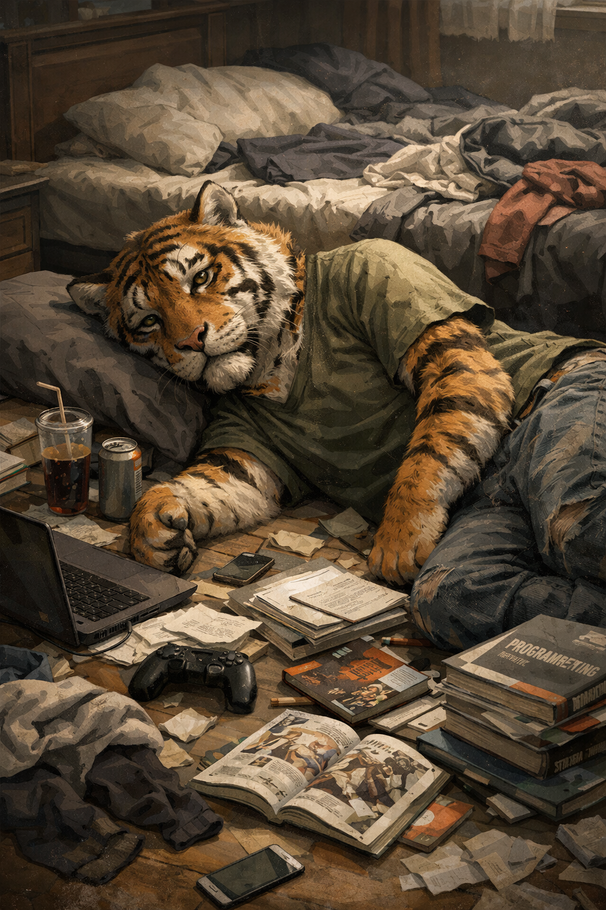

仕事や家事、勉強、地域活動。
やるべきことは分かっているのに、どうしても体が動かない。
できることといえば、
ダラダラとゲームをしたり、寝たり、動画を見たりすることだけ。
「自分は怠けているのでは？」
そう思ってしまうかもしれません。
でも、それは本当に怠けでしょうか。
多くの場合、それは心と脳の疲労です。
長く頑張り続けた結果、ブレーキがかかっている状態かもしれません。
聖書にはこうあります。
また、イエスもこう言いました。
大切なのは、「もっと頑張ること」ではなく、
ちゃんと休むことかもしれません。
おすすめは、丸一日自然の中に出かけること。
森を歩く。
海を眺める。
山の空気を吸う。
ただ静かに座る。
予定を詰め込まず、成果も求めない。
スマホから少し離れて、呼吸を整える。
それは逃げではありません。
回復のための前進です。
しっかり休んだ翌日、
不思議と少しだけ体が動くようになります。
机を少し片付けてみようかな。
仕事に少し手をつけてみようかな。
それで十分です。
無気力は弱さではありません。
回復のサインです。
今は、自分を責めるよりも、
静かな時間を大切にしてみてください。